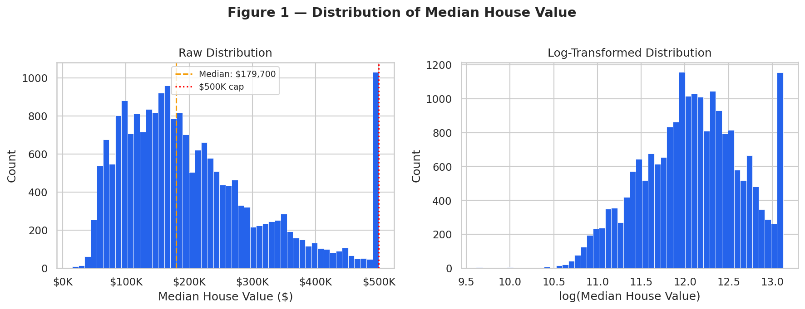
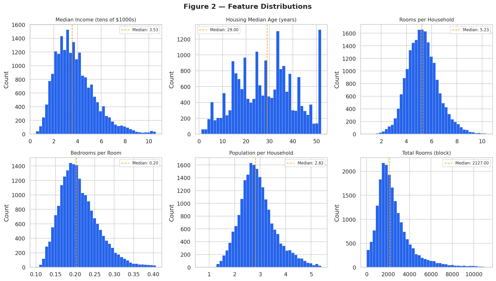
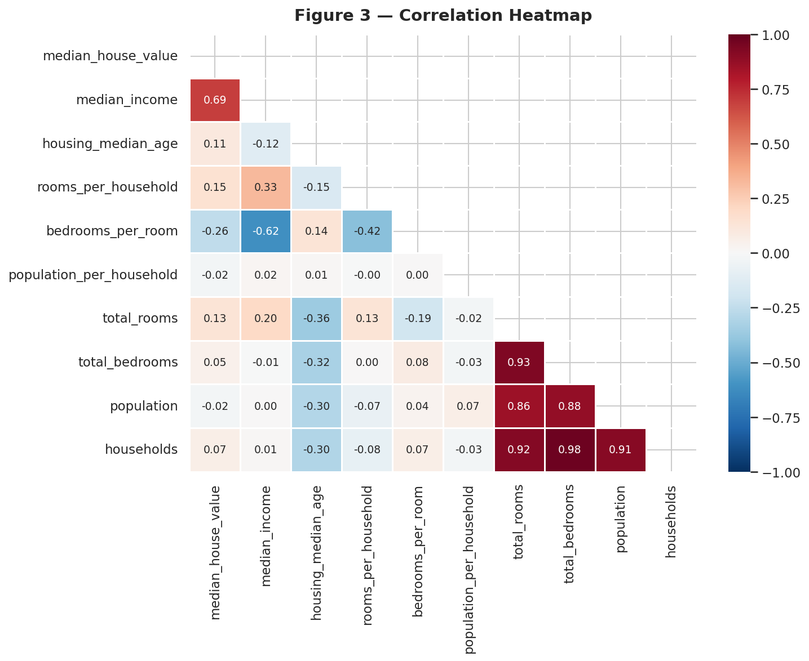
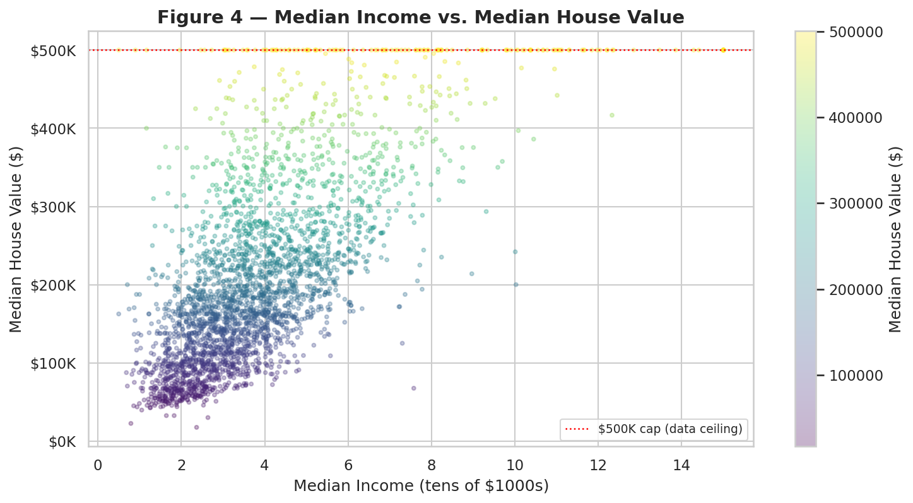
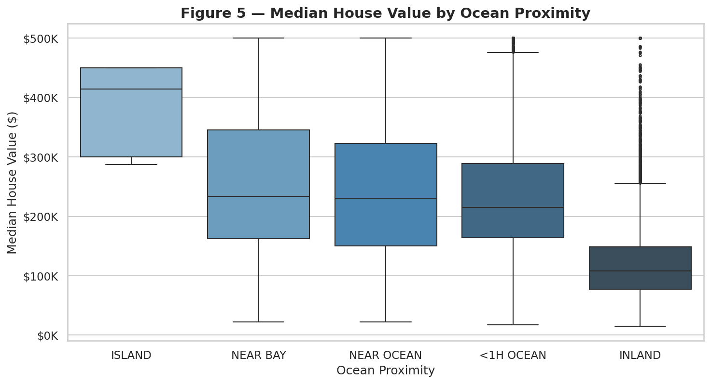
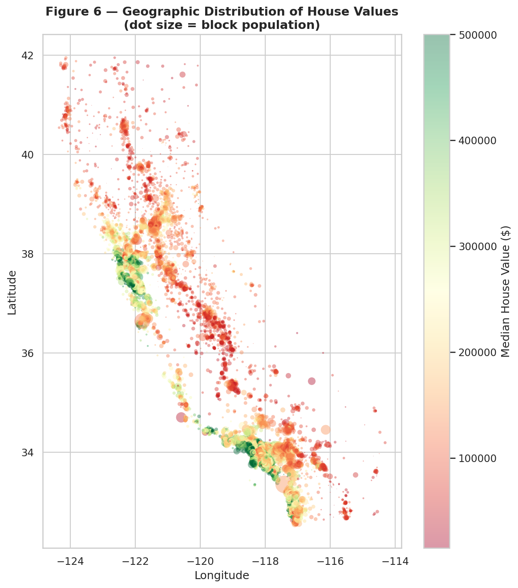
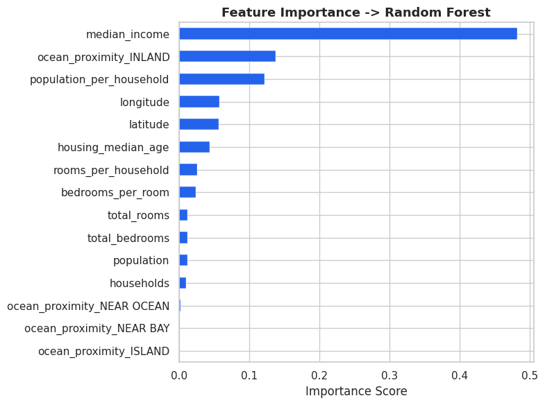
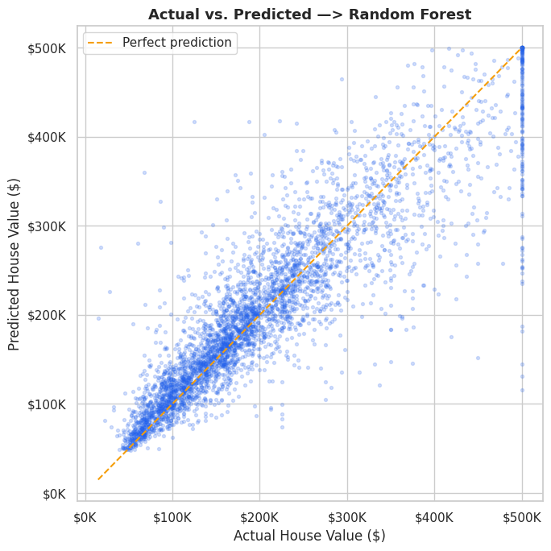

01 Project Overview
Housing affordability and pricing transparency are significant issues for buyers, sellers, policymakers, and financial institutions. This project applies the full predictive analytics workflow to the California Housing dataset to understand what neighborhood and structural characteristics most influence home prices and to build a model that can estimate median home values reliably.
The dataset comes from the 1990 U.S. Census and covers housing blocks across California. Each row represents a census block group, with features describing the geography, housing stock, population, and income of that block. The target variable is median_house_value.
Note: Median house values in this dataset are capped at $500,001, which creates a visible ceiling effect in the data. This is a known limitation and is discussed in the EDA and modeling sections.
02 Dataset Overview
Feature Descriptions
| Feature | Type | Description |
|---|---|---|
| longitude | numeric | How far west the block is; higher = farther west |
| latitude | numeric | How far north the block is; higher = farther north |
| housing_median_age | numeric | Median age of homes in the block; lower = newer |
| total_rooms | numeric | Total rooms across all households in the block |
| total_bedrooms | numeric | Total bedrooms across all households; 207 nulls imputed with median |
| population | numeric | Total people residing in the block |
| households | numeric | Total households in the block |
| median_income | numeric | Median household income in tens of thousands of USD |
| ocean_proximity | categorical | Location relative to ocean: INLAND, NEAR BAY, NEAR OCEAN, <1H OCEAN, ISLAND |
| median_house_value | numeric | Target. Median home value for households in the block (USD) |
Engineered Features
Three ratio-based features were derived from the raw counts to create more meaningful per-household signals:
| Feature | Formula | Why |
|---|---|---|
| rooms_per_household | total_rooms / households | Raw room count is block-level; per-household is more interpretable |
| bedrooms_per_room | total_bedrooms / total_rooms | Captures housing density; lower ratio suggests more spacious units |
| population_per_household | population / households | Proxy for household size and crowding |
03 Business Questions
This analysis is organized around three core questions:
What neighborhood and housing characteristics are most predictive of median home values in California?
How does proximity to the ocean affect median house prices, and by how much does being inland reduce expected value?
Can a machine learning model reliably estimate median home value from census block data, and which model type performs best on this task?
04 Exploratory Data Analysis
Six visualizations were produced to understand the structure of the dataset before modeling.
Figure 1 — Distribution of Median House Value
The target is right-skewed with a hard cap at $500,001. Log-transforming produces a more normal distribution, which may improve model performance.

Figure 2 — Feature Distributions
Total rooms and population are heavily skewed with outliers. Median income and housing age are more well-behaved. Histograms are clipped at the 99th percentile for readability.

Figure 3 — Correlation Heatmap
Median income has the strongest correlation with house value (~0.69). The engineered ratio features outperform the raw counts they were derived from.

Figure 4 — Median Income vs. House Value
Clear positive relationship between income and value, but the $500K ceiling is visible as a flat band across the top of the scatter. This cap is a known limitation of the dataset.

Figure 5 — House Value by Ocean Proximity
NEAR BAY and NEAR OCEAN blocks are significantly higher than INLAND. The ISLAND category has only 5 observations and should be treated with caution in modeling.

Figure 6 — Geographic Distribution
Bay Area and coastal LA clusters stand out as high-value. Inland Central Valley blocks are the lowest. Dot size represents block population.

05 Preprocessing
- Missing values: 207 nulls in total_bedrooms imputed with the column median
- Feature engineering: Three ratio features derived (rooms_per_household, bedrooms_per_room, population_per_household)
- Categorical encoding: ocean_proximity one-hot encoded with drop_first=True to avoid multicollinearity
- Train/test split: 80/20 split with random_state=42 for reproducibility
- Feature scaling: StandardScaler fit on training data only, then applied to test set
Important: The scaler was fit exclusively on the training set. Fitting on the full dataset before splitting would leak information from the test set into the model and inflate performance metrics.
06 Models
Two models were implemented and compared. Both are regression models predicting continuous house value.
Model 1 — Linear Regression (Baseline)
Used as the baseline. Linear regression is interpretable and fast, but struggles with the non-linear relationships present in this dataset. Particularly between income, geography, and house value.
Model 2 — Random Forest Regressor
An ensemble of 100 decision trees that handles non-linear relationships and feature interactions well. Significantly outperformed linear regression on all three metrics. Feature importance scores directly answer business question Q1.
Results
| Model | RMSE | MAE | R² |
|---|---|---|---|
| Linear Regression | $72,669 | $50,889 | 0.597 |
| Random Forest | $50,331 | $32,329 | 0.807 |
The Random Forest explains ~80.7% of the variance in house value and cuts prediction error by roughly $22,000 compared to the linear baseline.
Feature Importance — Random Forest
Median income is by far the most important predictor, followed by ocean proximity (INLAND) and population per household. The raw block-level counts like total_bedrooms and households rank near the bottom, confirming that the engineered ratio features carry more signal.

Actual vs. Predicted — Random Forest
Points cluster closely along the perfect prediction line up to around $400K. The flat ceiling at $500K is visible as a horizontal band at the top. Predictions get compressed at that threshold due to the data cap identified in EDA.

07 Repository Structure
├── README.md ← project overview and setup instructions
├── housing.csv ← raw dataset
├── notebooks/
│ ├── 01_eda.ipynb
│ ├── 02_preprocessing.ipynb
│ └── 03_modeling.ipynb
├── visualizations/
│ └── all six EDA figures (PNG)
├── report.pdf
└── .gitignore
GitHub Repository View Colab Notebook
Update the links above with your actual GitHub repo and Colab URLs once they are live.